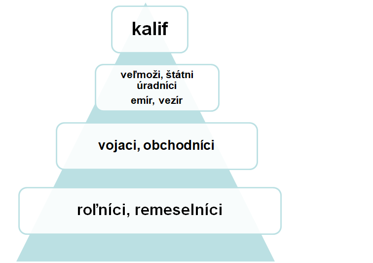
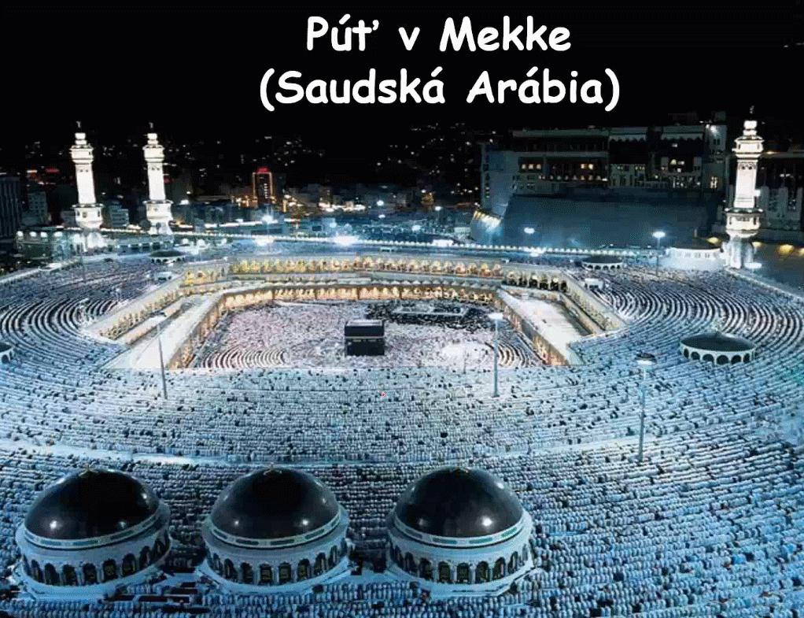
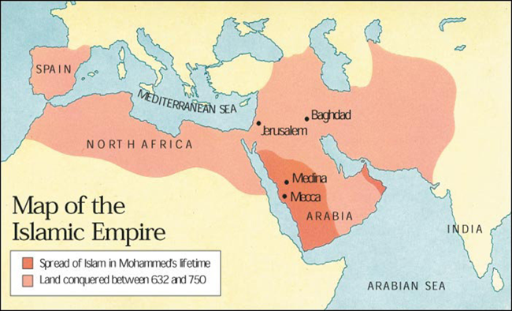

Na čele stál „Khalifa“ a v 9. St. keď bola ríša najväčšia sa rozdelila na viaceré „Khalifáty“ (napr. Fatimový v Egypte alebo Córdobsky na pyrenejskom polostrove).Na panovníckom dvore mal najvýznamnejšie postavenie vezír. územie štátu sa delilo na emiráty, ktoré spravoval emir. Hospodárstvo moslimského sveta sa opieralo o výkonné poľnohospodárstvo. Pôda a zavlažovacie zariadenia patrili kalifovi. Za ich používanie platili roľníci nájom.
Mohamed bol z nejakej bohatej rodiny a musel utiecť z Mäkky do Medimu
622 – začiatok ich letopočtu
posvätná kniha korán
 - kába v mäkke - ich najposvätnejšie miesto
Islam má päť pilierov
šaháda - (je len boh Alah a prorok Mohamed)
Salát (haha šalát) (5-krát do dňa sa treba modliť smerom ku Ka’be)
Zakát (daň na dobré účely)
Saum (pôst v mesiaci „ramadán“)
Hadždž (púť do Mekky)
2 roky po dobití Mäkky (632) Mohamed zomrel a nemal následníka
Šíiti - nástupca proroka len príbuzný
Sunniti - volený stúpenec

-Abú Bakr expandoval do Sýrie a Mezopotámie.
nástupca „Umar ibn al-Chattáb“ dobil Egypt
dynastia Umajjovcov obsadila celé severné pobrežie Afriky, blízky východ a Perziu až k Indii.
Obyvateľom dobytých území nechali ich kultúru aj náboženstvá ale len za špeciálnu daň.
Dobiť Konštantínopol sa im nepodarilo ale v roku 711 sa „Tárikovy ibn Zijádovy“ podarilo z Maroka preplávať na juh Pyrenejského polostrova a nazval tam po sebe skalu „Gibraltar“
v roku 732 siahalo územie Maurov (španielskych moslimov) až do Francúzska. Tam ích zastavil Karel Martel „kladivo“ v roku 732 v bitke medzi Tours a Poitiers.
Centrum sa presunulo z Damašku do Bagdádu.
Od 8. storočia sa kresťania zo španielska snažili vyhnať moslimov z Pyrenejského polostrova čo sa volalo „Reconquista“
Mohamed prorok
Abú Bakr –
1. kalifa,
Omar I.,
Osman I.
Hárún ar-Rašíd
Dynastie -
Umajovci /661-749/
Abbásovci /749- 1258/